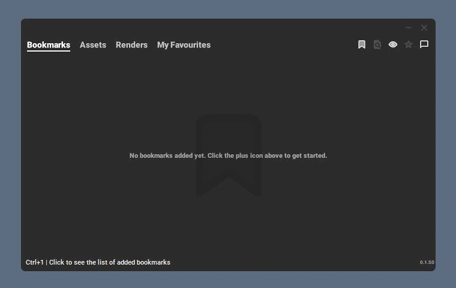

Bookmarks & Assets¶

Why Bookmarks…?¶
GWBrowser organizes projects into three parts: bookmarks, assets and files. A bookmark is an entry-point to a project, whilst assets are folders used to store scenes and render-files.
Depending on your role, and the project, you will likely only need to interact with a specific part of the project. This is where bookmarks come handy.
For instance, if you’re a character modeller, some folders (eg. shots and sequences) might not be of interest to you. You would then only bookmark the folder where your model scenes reside and ignoring all the extra stuff you don’t care about that much.
Creating Jobs¶
Before you can add a bookmark GWBrowser must be told where jobs are stored. You can define a primary, backup and local paths.
Select the bookmarks tab (Ctrl+1) and click the small bookmark icon
 , or press
, or press Ctrl+N, to show the add bookmarks window.

If no jobs exist yet, you’ll have to create one, otherwise, you can select an existing one from the dropdown menu:
Note
The first time a job is created bookmark folders won’t contain any assets. Once at least one asset has been added to a bookmark folder, they will show up in the dropdown menu.
See below to learn what constitutes a bookmark folder.
The server, asset and bookmark folder selections make up the final bookmark:

Creating Assets¶
Every bookmark folder will contain a number of  assets. These can be
shots, sequences, character assets, etc. In technical terms, assets are simply
folders used to store texture, render, cache, scene (or any other files).
assets. These can be
shots, sequences, character assets, etc. In technical terms, assets are simply
folders used to store texture, render, cache, scene (or any other files).
./SHOTS/ <--- bookmark folder
├── .browser <--- GWBrowser settings and thumbnails
├── SH000/
│ ├── workspace.mel
│ ├── scenes/ <--- a task folder
│ ├── renders/ <--- another task folder
│ └── textures/ <--- and you guessed, a task folder!
├── SH010/
│ ├── workspace.mel
│ ├── scenes/
│ ├── renders/
│ └── textures/
└── SH020/
├── workspace.mel <--- identifier file
├── scenes/
├── renders/
└── textures/
Note
Assets have an identifier file in their root used by GWBrowser to find them.
Because we’re using the Maya project structure as reference this is a
workspace.mel file.
When the identifier file resides in the root of a directory, GWBrowser will understand it as an asset, and the parent folder as a bookmark folder.
To create a new asset, select the assets tab (Ctrl+2) and click the
small add icon , or press Ctrl+N.

The created asset will be placed in the root of the currently active bookmark folder. If there’s no active bookmark, you won’t be able to add an asset.
Tip
To activate a bookmark or asset, double-click it, or press enter when selected.
Customising the Job and Asset Templates¶
The template files defining the job and asset folders are located in the
[username]/Documents/GWBrowser folder on windows.
They are called Asset.zip and Job.zip respectively. You can replace them with any other zip file (make sure to keep the same name).